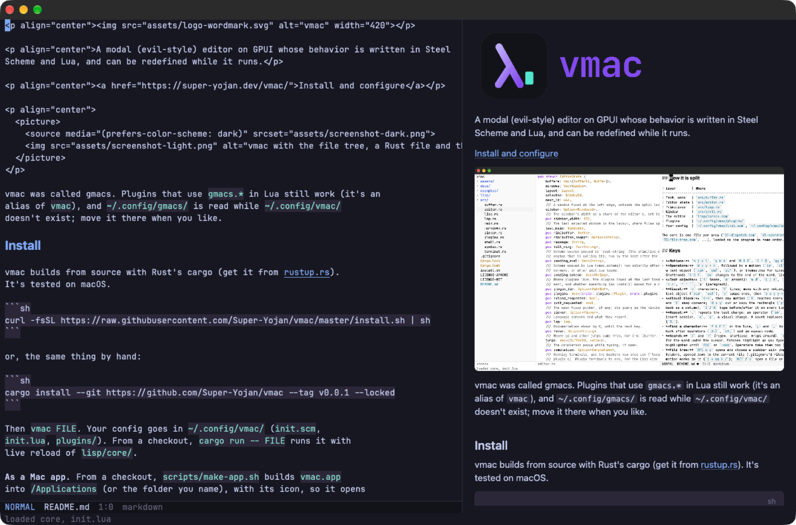

The core is small Rust: buffers, windows, language servers and drawing, on GPUI. Every command, key and panel is Lua in lua/core/, and you can redefine any of it while vmac runs.
Save your config and it reloads. A mistake keeps the last version that worked.
fnmain() {
let path = std::env::args().nth(1);
let editor = Editor::new(pth);
}
────────────────────────────────────────error: cannot find value `pth` in this scope
K pub fn new(path: Option<String>) -> Editor
gd src/editor.rs:264
gr 3 references
SPC c a Change to `path`
Language servers
02Errors where they are
Go to · docsgdKgr
Fix · rename · formatSPC c aSPC c rSPC c f
Completionas you type
Serversrust-analyzer, pyright, gopls, clangd…
RestartSPC c R
Series / 03 Markdown

03Reads like the page
Markuphidden until you type
PreviewSPC m p, images too
Tablesaligned like Org mode
Series / 04 Look
SPC h t Theme────────────────────────────
Catppuccin Mocha
Catppuccin Latte
Tokyo Night
Gruvbox Dark
Solarized Light
Everforest Dark
Flexoki Light
… 36 built in, or your own
04Themes, light and dark
Themes36 built in
Followsthe system's mode
Fontany, Nerd Fonts first
Series / 05 Around it
SPC o p file tree
SPC SPC find a file, previewed
SPC p p switch project
SPC f r recent files
SPC o t terminal (Ghostty's engine)C-w v split beside
SPC h p plugins
SPC b h the dashboard
05Never leave it
Terminalssearchable scrollback
Pluginsfrom git, in Lua
Mac appSpotlight, Dock
Git
Version control / Magit's way GitHub through gh
Stage a line. Ship the pull request.
SPC g g opens a status buffer the way magit draws it: the branch, what's staged and unstaged, stashes, unpushed commits. Stage a file, a hunk or a few lines in visual state, commit, push, rebase, without a terminal.
Pull requests, reviews and issues come in through the gh CLI, so your login is the one you already have.
SPC g p Pull requests────────────────────────────────────────✓#41 Folding for Markdown approved•#39 Remote sessions over ssh review✗#36 Incremental parsing draftRET open C check out b browser
d review the diff, comment on lines
a approve r request changes
m merge: squash, commit or rebase
Through gh
07Review without the browser
Pull requests · issuesSPC g pSPC g i
Open a PR for this branchSPC g n
Reviewin a diff, comments by their lines
In filesgutter signs, blame on the line
Share a lineSPC g oSPC g y
Notes
Org mode / In Markdown Plain files in ~/notes
Org mode's habits. Markdown's files.
Capture a TODO from anywhere, keep a daily note, and see every dated item and open task across your notes in one agenda. Headings fold, promote and move with their subtrees. It's all ordinary .md, readable anywhere else.
TAB folds a heading's section, S-TAB the whole file, and zazMzR work as in Vim.
Series / 08 Capture
SPC n c Capture TODO────────────────────────────## TODO Reply about the RFC
## TODO Fix PDF follow <2026-11-12 Thu>## DONEShip 0.0.7→ ~/notes/inbox.md
08From anywhere
CaptureSPC n cSPC n C
Today · findSPC n dSPC n f
TODO → DONESPC m t
Series / 09 Agenda
Agenda for Monday, 09 November 2026Overdue2026-11-06 Fri Renew the domain
Today2026-11-09 MonTODO Standup
Upcoming2026-11-12 Thu Fix PDF follow
To doTODO Reply about the RFC
09Every task, one list
AgendaSPC n a
Visit · doneRETt
DatesSPC m d, type fri or +3
Series / 10 Outline
# Project vmac## Ideas… 14 lines## This week
- [x] Folding
- [ ] Agenda filters
- by tag
## Links… 6 lines
See [[reading-list]]
10Fold, move, link
FoldTABS-TAB
Promote · moveM-hM-lM-kM-j
LinksSPC m l, RET follows
Assistant
Help / On demand When you ask
Just enough help. You keep the keyboard.
Stuck on an error, an API or a design? Ask from where you are: SPC a s on the lines you're looking at, SPC a e for the file's errors. The answer comes in a pane beside your code. It reads your buffers, edits only with your say-so, and every change waits for your review.
It's the real Claude Code, Codex or Gemini CLI, over the Agent Client Protocol. vmac doesn't hide a model of its own.
*agent-review*────────────────────────────────────────
src/modeline.lua (2 changes)@@ line 12- (list mode name position)+ (list mode name (word-count) position)@@ line 30- (list (lsp-status) 'dim)ga accept · gx reject · ]h [h moveSPC a A / SPC a X all of them
You decide
12Every change, reviewed
Changed linesmarked in the file
Accept · rejectgagx, one u undoes
Permissionasked, with the plan shown
Its commandsin terminals you can watch
Rules · hooksin Lua
Install
Build / From source macOS · Linux · Windows
Build it, open a file, make it yours.
vmac builds with Rust's cargo (from rustup.rs); the first build takes a few minutes. The installer builds the latest release, v0.0.8, and makes ~/.config/vmac/.
From a checkout, scripts/make-app.sh builds vmac.app for Spotlight and the Dock.
curl -fsSL https://raw.githubusercontent.com/Super-Yojan/vmac/master/install.sh | sh
Each release has vmac built for macOS (13 or later, one app for Apple silicon and Intel), Linux (x86_64 and arm64, glibc 2.35 or later, with Vulkan and Wayland or X11) and Windows 10 or later. On Linux, this puts vmac in ~/.local/bin and adds it to your app menu (use aarch64 on arm64):
On macOS, download vmac-macos-universal.zip, move vmac.app to Applications, and since it isn't notarized, run xattr -dr com.apple.quarantine /Applications/vmac.app once. On Windows, download vmac-x86_64-pc-windows-msvc.zip and open vmac.exe. Windows is new: commands that run shell scripts want Git Bash or WSL.
curl -fsSL https://github.com/Super-Yojan/vmac/releases/latest/download/vmac-x86_64-unknown-linux-gnu.tar.gz | tar -xz --strip-components=1 -C ~/.local
Step / 01
Install
Run the installer, or the cargo line yourself.
Step / 02
Open a file
vmac FILE starts in normal state; plain vmac opens the dashboard. SPC is the leader, as in Doom Emacs.
Step / 03
Configure
Write init.lua in ~/.config/vmac/: commands, keys, the modeline, faces, themes, servers.
Step / 04
Extend
Plugins from git, or a folder of your own in plugins/. SPC h p manages them.
Config / Lua~/.config/vmac/init.lua
-- A command and a key for it.
vmac.command("insert-date", function()
vmac.insert(os.date("%Y-%m-%d"))
end)
vmac.map("normal", "SPC i d", "insert-date")
-- Light and dark themes that follow the system.
vmac.set_themes("Catppuccin Latte", "Catppuccin Mocha")
-- Let the agent read and search without asking.
vmac.hooks.agent_permission = function(title, kind)
if kind == "read"or kind == "search"then return"allow"endend
Config / Lua~/.config/vmac/init.lua
-- SPC t z: just this window.
vmac.command("zen", function() vmac.delete_other_windows() end)
vmac.map("normal", "SPC t z", "zen")
-- Your own dashboard items.function core.dashboard_items()
local items = core.default_dashboard_items()
table.insert(items, 1, { "t", "Terminal", "terminal-toggle" })
return items
end-- Optional: a Nerd Font, a language server.-- brew install --cask font-jetbrains-mono-nerd-font-- rustup component add rust-analyzer
Tutorial
Learn / In an afternoon Nine lessons
From your first file to your own commands.
Short lessons, each one a few things to try in a real project: moving and editing, finding files, language servers, git, notes, the assistant, and the Lua that runs all of it.
Start at the top, or skip to what you need. Every lesson ends with what to try next.